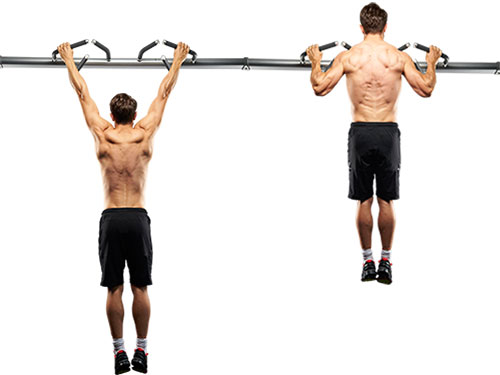
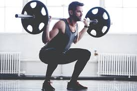
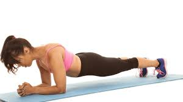

La traction est un exercice physique consistant à hisser ses épaules au niveau d'une barre en la tenant par les mains. Les tractions ont pour objectif principal le développement des muscles du dos et des bras. C'est un exercice polyarticulaire de musculation, élémentaire et très populaire, car simple et efficace. Il existe une variante consistant à faire l'exercice horizontalement.
A squat is a strength exercise in which the trainee lowers their hips from a standing position and then stands back up. During the descent of a squat, the hip and knee joints flex while the ankle joint dorsiflexes; conversely the hip and knee joints extend and the ankle joint plantarflexes when standing up. Squats are considered a vital exercise for increasing the strength and size of the lower body muscles as well as developing core strength. The primary agonist muscles used during the squat are the quadriceps femoris, the adductor magnus, and the gluteus maximus. The squat also isometrically uses the erector spinae and the abdominal muscles, among others. The squat is one of the three lifts in the strength sport of powerlifting, together with the deadlift and the bench press. It is also considered a staple exercise in many popular recreational exercise programs.
Le développé couché est un exercice poly-articulaire de force et de musculation qui consiste à soulever et abaisser une barre d'haltères, développant principalement les pectoraux et les triceps, mais qui sollicite également d'autres muscles comme le grand dorsal, le grand rond, les trapèzes, les deltoïdes antérieurs et les biceps. C'est un des trois mouvements de base de la force athlétique avec les flexions sur jambe et le soulevé de terre.
Le gainage est un entraînement physique et de musculation qui permet de renforcer les muscles abdominaux et dorsaux. Réalisés en isométrie, ces exercices sollicitent les muscles de l'abdomen et du dos en profondeur, et participent au maintien et à la protection de la colonne vertébrale. Le gainage est utilisé en préparation physique dans de nombreux sports, ainsi que lors de différentes activités telles que le Pilates et le yoga.
Le soulevé de terre est un exercice polyarticulaire de force et de musculation. Très complet, il permet, selon la variante exécutée et entre autres, le développement des fessiers, des ischio-jambiers, des muscles érecteurs du rachis, et, plus globalement, de l'ensemble du dos. Comme la plupart des exercices de tirage, il peut aussi entraîner un travail notable des avant-bras. C'est l'un des trois mouvements de base de la force athlétique, avec les flexions sur jambes et le développé couché.